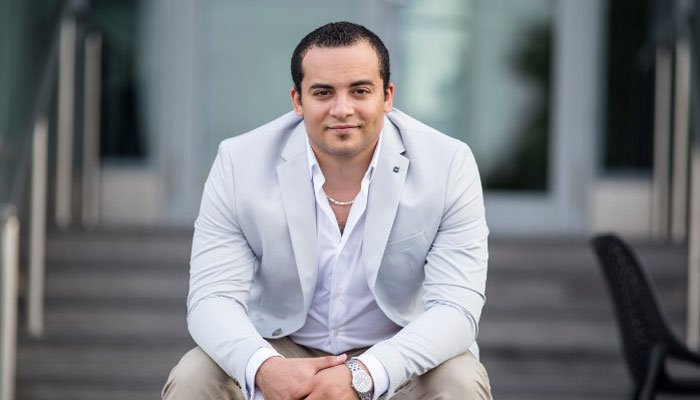

<div class="row justify-content-center">
    <div class="col-md-8">
        <!-- Blog  -->
        <div class="mini-spacer">
            

            <h2 class="title font-light">Mohamed Ghaith</h2>
            <span class="subtitle">Founder & CEO</span>

            <div class="m-t-10">
                <ul class="list-inline">
                    <li class="list-inline-item"><a href="https://www.fb.com/moghaith" target="_blank"><i class="fab fa-facebook-f"></i></a>
                    </li>
                    <li class="list-inline-item"><a href="https://www.linkedin.com/in/mohamedghaith/" target="_blank"><i class="fab fa-linkedin-in"></i></a>
                    </li>
                </ul>
            </div>

            <ul class="list-block m-t-30 m-b-30">
                <li>
                    <i class="fa fa-circle font-13 text-zeew-gradiant"></i> Entrepreneurship & business
                </li>
                <li>
                    <i class="fa fa-circle font-13 text-zeew-gradiant"></i> Forex & Financial markets
                </li>
                <li>
                    <i class="fa fa-circle font-13 text-zeew-gradiant"></i> BitCoin and ICO Research & Development
                </li>
            </ul>
            <p class="m-t-30 m-b-30">With over 7 years of experience in entrepreneurship, management, business planning, financial analysis, software engineering, operations, and decision analysis, Mohamed has the breadth and depth of experience needed to quickly understand entrepreneurs’ businesses and craft the most suitable solutions.</p>

            <p class="m-t-30 m-b-30">Mohamed was managing director of FXOpen.com group in middle east for 4 continues years</p>

            <p class="m-t-30 m-b-30">Mohamed trades a variety of European, US, and Asian markets, including stock indices, futures, options and warrants, individual stocks, and currency (forex) markets. Mohamed also offers a variety of professional market analysis and trading services to other traders and investors, and trading instruction to aspiring professional traders.</p>

            <p class="m-t-30 m-b-30">Mohamed has been a full-time financial trader for several years, trading European, US, and Asian markets every trading day (five days a week). He has experience analyzing various financial markets, creating new trading techniques and trading systems for scalping, day, swing, and position trading, and making trades. Mohamed is also an experienced computer programmer, and has written a variety of trading related software, including charting, market analysis, trade analysis, automated trading, and order entry systems.</p>

            <p class="m-t-30 m-b-30">Mohamed has a well balanced education, covering a range of subjects from Engineering to Finance. His advanced education includes advanced mathematics, computer programming (C / C++, and Assembly), and finance.</p>

            <p class="m-t-30 m-b-30">Mohamed is young entrepreneur he started learning programming language (Visual Studies 6, C++) at age of 16 years old created his first computer software and started selling it door-to-door to small business in his neighborhood.</p>

            <p class="m-t-30 m-b-30">By age of 17 Mohamed have won the prize for “The young programmer competition” held in Alexandria Governorate, Egypt back in 2006</p>

            <p class="m-t-30 m-b-30">Mohamed was chosen for USA scholarship provided by I-EARN Egypt in 2006.</p>

            <p class="m-t-30 m-b-30">Mohamed continued his hobby as computer programming, made lots of projects for many local companies.</p>
        </div>
        <!-- Blog  -->
    </div>
</div>